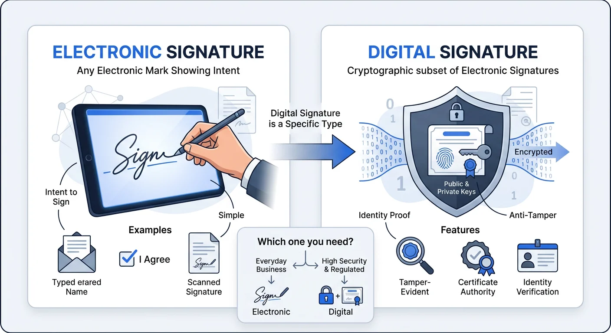

People use "digital signature" and "electronic signature" interchangeably. They are not the same thing. One is a broad legal concept. The other is a specific cryptographic technology. Confusing them can cost you time, money, or a rejected filing.
This guide breaks down the real difference in plain language. No jargon. No fluff. By the end, you will know exactly which type you need and how to create one.

What Is an Electronic Signature?
An electronic signature (e-signature) is any electronic indication that a person agrees to the contents of a document. That is it. The definition is intentionally broad.
Examples of electronic signatures:
- Typing your name at the bottom of an email
- Drawing your signature on a touchscreen
- Clicking an "I Agree" checkbox
- Uploading a transparent signature image into a document
- Using a tool like Signature Sketch to create and insert a handwritten-style signature
The key element is intent. If you electronically indicate that you agree to something, that counts as an electronic signature under most laws worldwide.
What Is a Digital Signature?
A digital signature is a specific type of electronic signature that uses cryptographic algorithms to secure the document. Think of it as the armored truck version of a signature.
Here is how it works technically:
- The signer has a digital certificate issued by a Certificate Authority (CA), which contains a public key and a private key.
- When signing, the software creates a hash (a unique fingerprint) of the document content.
- The hash is encrypted with the signer's private key, creating the digital signature.
- The recipient uses the signer's public key to decrypt the hash and verify that the document has not been altered.
If even a single character in the document changes after signing, the verification fails. This is what makes digital signatures tamper-proof.
The Simple Analogy
Electronic signature = signing a letter with a pen. It shows your intent.
Digital signature = signing a letter with a pen, sealing it in a tamper-evident envelope, and having a notary verify your identity. It shows your intent and proves the document was not changed.
Key Differences at a Glance
| Feature | Electronic Signature | Digital Signature |
|---|---|---|
| Definition | Any electronic mark showing intent to sign | Cryptographic signature using certificates |
| Technology | None required (image, typed name, click) | PKI (Public Key Infrastructure) |
| Identity Verification | Varies (email, IP address, none) | Certificate Authority verifies identity |
| Tamper Detection | No built-in protection | Yes, any change invalidates the signature |
| Legal Status | Legally binding in most countries | Legally binding, often required for regulated industries |
| Cost | Free (tools like Signature Sketch) | Paid (certificate fees, software licenses) |
| Ease of Use | Very easy, no setup | Requires certificate installation and software |
| Best For | Contracts, HR forms, invoices, everyday documents | Government filings, healthcare, finance, software |
Legal Framework: Are Both Legally Valid?
Short answer: yes. Both electronic signatures and digital signatures are legally binding in most countries. But the legal frameworks treat them differently.
United States: ESIGN Act & UETA
The ESIGN Act (2000) and the Uniform Electronic Transactions Act (UETA) establish that electronic signatures are legally equivalent to handwritten signatures for most transactions. There are exceptions:
- Wills and testamentary trusts
- Family law documents (adoption, divorce in some states)
- Court orders and notices
- Cancellation of utility services or insurance
For everything else, including contracts, employment agreements, NDAs, and invoices, an electronic signature is fully legal.
European Union: eIDAS Regulation
The EU's eIDAS regulation (2014) defines three levels of electronic signatures:
- Simple Electronic Signature (SES): Any electronic data attached to other data used for signing. No specific technology required. This is what most people use.
- Advanced Electronic Signature (AES): Uniquely linked to the signer, capable of identifying the signer, and detects any changes to the signed data.
- Qualified Electronic Signature (QES): An advanced signature created by a qualified device and based on a qualified certificate. This has the legal equivalence of a handwritten signature across all EU member states.
Digital signatures typically fall under AES or QES. For most business transactions, SES is sufficient.
Other Countries
- UK: Electronic Communications Act 2000. E-signatures are admissible in court.
- Canada: PIPEDA and provincial laws recognize electronic signatures.
- Australia: Electronic Transactions Act 1999.
- India: IT Act 2000 recognizes both, but digital signatures (using Aadhaar-based eSign) carry more weight for government filings.
When Do You Need Which?
Use an Electronic Signature When:
- Signing a freelance contract or NDA
- Approving an internal company document
- Signing a lease or rental agreement
- Adding your signature to a Word document or Google Doc
- Signing invoices, purchase orders, or HR forms
- Any situation where both parties agree to use electronic signatures
Use a Digital Signature When:
- Filing documents with government agencies that require it
- Working in regulated industries (healthcare, finance, pharmaceuticals)
- Distributing software (code signing certificates)
- Sending encrypted emails that need identity verification
- Situations where you need to prove the document was not altered after signing
Rule of Thumb
If nobody told you that you need a digital signature, you probably do not. An electronic signature handles 95% of real-world signing needs. When a digital signature is required, the requesting party will explicitly tell you.
How to Create an Electronic Signature (Free)
Creating an electronic signature takes about 30 seconds. Here is the fastest method:
- Go to Signature Sketch.
- Choose Type mode (pick a handwriting font) or Draw mode (sign with your mouse or finger).
- Select your ink color. Blue ink is recommended for formal documents because it distinguishes originals from copies.
- Click Download PNG. You get a transparent signature image.
- Insert the image into your document: Word, Google Docs, PDF, or email.
No account. No watermark. No data stored on any server. Everything happens in your browser.
Common Myths Debunked
Myth 1: "Electronic signatures are not legally binding"
False. The ESIGN Act (US), eIDAS (EU), and equivalent laws in 60+ countries explicitly recognize electronic signatures as legally valid. Courts have upheld e-signatures in countless cases.
Myth 2: "You need special software for a valid electronic signature"
False. A typed name in an email can be a valid electronic signature if there is clear intent to sign. Tools like Signature Sketch simply make it look more professional and provide a reusable image.
Myth 3: "Digital signatures are more legally valid than electronic signatures"
Not necessarily. Both are legally valid. Digital signatures provide stronger evidence of identity and document integrity, but that does not make them "more legal." A simple electronic signature on a contract is just as enforceable.
Myth 4: "I need a digital signature for my business contracts"
Almost certainly not. Unless you are in a regulated industry or dealing with government agencies that specifically require PKI-based signatures, an electronic signature is sufficient for business contracts.
Security: How Do They Compare?
| Security Feature | Electronic Signature | Digital Signature |
|---|---|---|
| Signer Authentication | Email, IP logging, knowledge-based | Certificate-based (CA verified) |
| Document Integrity | No built-in check | Hash verification detects any change |
| Non-repudiation | Weak (signer could deny) | Strong (cryptographic proof) |
| Encryption | Optional (depends on platform) | Built-in (PKI) |
For everyday documents, the security of an electronic signature is perfectly adequate. You do not need military-grade encryption to sign a freelance contract. But if you are handling sensitive medical records or financial filings, digital signatures provide the extra layer of protection.
Frequently Asked Questions
Is a photo of my handwritten signature an electronic signature?
Yes. A scanned or photographed image of your handwritten signature qualifies as an electronic signature when used with intent to sign. For a cleaner result, use a tool like Signature Sketch to create a transparent PNG version.
Can I use an electronic signature on a PDF?
Absolutely. Most PDF readers support inserting signature images. You can also use browser-based tools to sign PDFs online without installing any software.
How much does a digital signature certificate cost?
Digital signature certificates typically cost $20 to $500 per year depending on the provider and validation level. Some government agencies provide them for free to registered entities. Electronic signatures, by contrast, are free with tools like Signature Sketch.
Can I convert an electronic signature into a digital signature?
Not directly. They are fundamentally different technologies. An electronic signature is an image or action. A digital signature is a cryptographic operation. You would need to sign the document again using digital signature software with a valid certificate.
Create Your Electronic Signature
Free. No sign-up. Works in your browser. Download a transparent PNG in seconds.
Start Signing Now